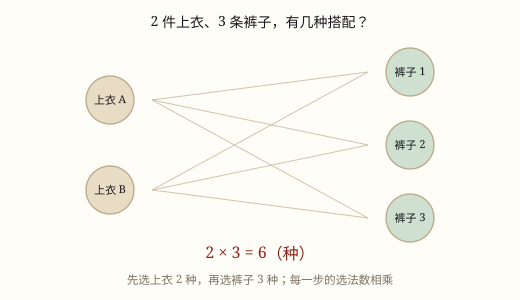

乘法原理与分步计数
一件事要连着做几步才做完，第一步有几种做法、每一步都不受前面影响，总做法数就是步步相乘。
| 所属主题 | 计数方法 |
|---|---|
| 所属模块 | 数学思考 |
| 课标学段 | 第三学段（5~6年级） |
| 前置知识 | 加法原理与分类计数 |
| 核心素养 | 推理意识模型意识应用意识 |
课标要求
| 数与代数·数量关系 | 能解决生活中的简单问题，并能对结果的实际意义作出解释，经历探索简单规律的过程（例14），形成初步的模型意识和应用意识。 印刷第 21 页 行为动词：运用 |
|---|
说明
加法原理管「几类」，乘法原理管「几步」。有些事做一步不够：穿好一套衣服要先选上衣再选裤子，配一份套餐要先选荤菜再选素菜、再选汤。这些步骤必须依次做完，缺一步这件事就没完成。
数这种事的办法是：看第一步有几种做法；再固定第一步的某一种，看第二步还有几种做法。如果不管第一步选了哪一种，第二步的做法数都一样，那么总数就是 a× b。
为什么是乘？把搭配全部列出来看。3 件上衣、4 条裤子，穿上衣 1 时能配 4 条裤子，穿上衣 2 时也能配 4 条，穿上衣 3 时还是 4 条，就是 3 个 4，正好是乘法要算的「几个几」。乘法在这里不是背出来的，是排成方阵数出来的。
步数多了照样相乘。3 位数字的密码锁，第一位 10 种、第二位 10 种、第三位 10 种，10×10×10=1000 种。每一步都只是把「还不知道的那一位」定下来，三位全定了，密码才算出来。
两个原理的分界线只有一句：一步就能交差的是分类，用加；要连着做几步才交差的是分步，用乘。分不清的时候，就问自己「做完这一步，事情完了吗」。
两个原理还经常一起用。比如套餐分 A、B 两种系列，A 系列 3 荤 2 素，B 系列 2 荤 4 素：先在每个系列里用乘法算出各自的搭配数，3×2=6、2×4=8，再用加法合并，6+8=14。先类内相乘，再类间相加，这是大多数计数题的真实骨架。
使用场景
校服搭配：3 种上衣配 2 种裤子，出门前各选一件，3×2=6 套。
密码锁：3 位数字，每一位都能从 0 到 9 里挑，10×10×10=1000 种。
食堂套餐：1 荤 1 素 1 汤，各选一样，把三类数量乘起来。
共享单车：从 3 个借车点里选一个借、4 个还车点里选一个还，3×4=12 种借还组合。
快递柜：先看第几排、再看第几列，两个都定了才找到格口，排数乘列数就是格口总数。
班级值日分组：先按 4 个区域分工，每个区域再安排上午、下午两班，4×2=8 个岗位。
注意点
每一步只完成一部分，全部做完才算完成，这是用乘的前提。做完一步就结束了，那是加法。
每一步的选择数不能因为前面选了哪个而变，否则不能直接乘，要分情况讨论。
允许重复和不允许重复，答案差很多。密码锁允许同一位重复，编号不允许，读题时要看清。
步骤的先后可以换，乘积不变，但不要漏步、也不要凭空多算一步。
「各选一样」是关键信号：出现这四个字，多半要用乘法；出现「或者」多半要用加法。

图 1：分步完成的事，把每步的选法数相乘
为什么是这样
算理推导
把这件事拆成必须依次完成的步骤：第一步选上衣，第二步选裤子。
列出搭配表：第一行是上衣 1 配裤子 1、2、3、4；第二行是上衣 2 配裤子 1、2、3、4；第三行同理。
每一行都是 4 个，一共 3 行，总数是 3 个 4，也就是 3×4=12。
能这样算的关键，是每一行一样长。每一行一样长，才能用「每行个数 × 行数」；行不一样长，就不能直接乘。
什么情况下行会不一样长？比如从 5 个人里选 3 个人排队，第一个位置 5 人选，第二个位置只剩 4 人，第三步只剩 3 人，每步的数目在变，但每步的数目仍然是确定的，照样能连乘。真正不能乘的，是「第一步选了什么，会让第二步有几种做法变得说不清」。
所以乘法原理要盯的不是「乘」这个动作，而是「每走一步，后面的做法数都是定好的」这个前提。
动手实验
用 3 张上衣卡和 4 张裤子卡在桌上摆方阵：每行固定一件上衣，把 4 条裤子依次摆在右边，摆成 3 行 4 列，数一数是 12 个组合。再把其中一条裤子拿走重摆一次，还是 3 行，每行变成 3 个，3×3=9。最后试着把一张卡片同时算进两行，看看总数会不会重复。
按场景的例题
例 1（场景：家庭与年龄） 行李箱密码锁
行李箱的密码锁是 3 位数字，每一位都可以是 0 到 9，允许重复。一共有多少种密码？
解：第一位 10 种，第二位 10 种，第三位 10 种，每一位都不受前面影响，10×10×10=1000。
答：1000 种。
例 2（场景：饮食与配比） 食堂配一份套餐
食堂套餐要 1 荤 1 素 1 汤。荤菜 4 种、素菜 3 种、汤 2 种，一共有多少种搭配？
解：三步依次选：先定荤菜 4 种，每一种荤菜都能配 3 种素菜，每一种搭配又能配 2 种汤，4×3×2=24。
答：24 种。
例 3（场景：行程出行） 共享单车借还
共享单车有 3 个借车点、4 个还车点。从任意一个点借、到任意一个点还，有多少种借还组合？
解：借是一步 3 种，还是一步 4 种；每个借车点都能配 4 个还车点，是 3 个 4，3×4=12。
答：12 种。
例 4（场景：校园生活） 校服搭配
校服有 3 种上衣、2 种裤子、2 种运动鞋，各穿一件（双），有多少种搭配？
解：三步：3×2×2=12。
答：12 种。
常用推论
分 n 步，每一步都有 m 种做法，总数是 n 个 m 相乘。
两步交换顺序，答案不变：a× b=b× a。
如果某一步里有 k 种做法不合要求，先在这一步的总数里去掉 k，再乘。
分类里套分步很常见：先在每一类里用乘法算，再把各类结果相加。
判断该加还是该乘，只问一句：做完眼前这一步，事情结束了吗？结束了用加，没结束用乘。
把搭配排成一张表，行数是一步的做法数，列数是另一步的做法数，格子总数就是答案，这也是检查的好办法。
易错点
错3 件上衣、4 条裤子，一共 3+4=7 种穿法。
为什么错选上衣只是第一步，还没穿好一套。把分步当成了分类，该乘写成了加。
正确3×4=12 种。每件上衣都能配 4 条裤子，是 3 个 4。
错食堂有 4 种荤菜、3 种素菜，只选一样菜，算成 4×3=12 种。
为什么错只选一样就完成任务了，这是分类不是分步，反过来把加法写成了乘。
正确4+3=7 种。
错用 0 到 9 组成没有重复数字的两位数，算成 10×10=100 个。
为什么错十位不能是 0，只有 9 种；个位不能和十位相同，也只有 9 种。第二步的选择数已经变了，不能再按 10 算。
正确9×9=81 个。
错3 位密码锁只算了前两位，10×10=100 种。
为什么错漏了一步。只定了两位，密码还没确定，事情没做完。
正确10×10×10=1000 种，有几位就乘几次。
直观理解
乘法原理像过关卡：第一道门有 3 个入口，每个入口后面都接着 4 条通道，所以走法是把每道门的入口数乘起来。加法原理像一排并排的门，推开一扇就已经出去了。分不清的时候，看自己「走出去了没有」——没出去就还得继续走，那就是乘；一推门就出去了，那就是加。
分步做事用乘法，步步都得走一下；上衣裤子配一配，几件几件乘起来。